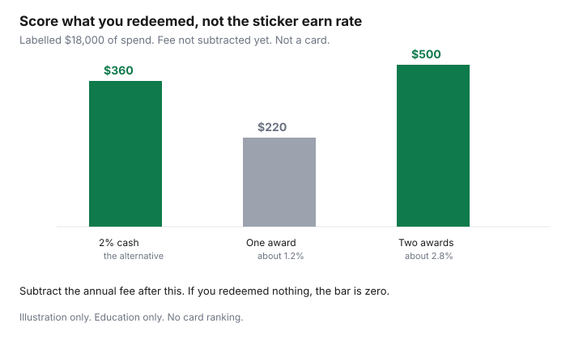

Travel · Canada
When Cash-Back Beats Travel Points for Canadian Households
A travel-points setup pays when you redeem it above a simple rebate, on trips you actually take. It loses when the points sit, the annual fee renews, and the only award you can find is a bad one. For a lot of Canadian households the simpler rebate is cash back. The work is to notice which year you are in.
This is an anti-complexity test. It is not a card ranking, and it does not name a product to open. Cents per point, when Aeroplan is the currency you kept, is the Aeroplan versus cash guide. Which of Aeroplan or a fixed one-cent program you even want is Scene+ versus Aeroplan. This page asks whether either one is earning its keep.
Disclosure: Cash-back card comparison sites are an offer type. Saving Optimizer may earn a commission if we later add those links. We do not currently claim a card-issuer partnership. No card is ranked or recommended. Fee figures below are labelled illustrations, not a product’s price. Education only.
Key takeaways
- If you take fewer than one trip a year you will redeem well, a flat cash-back rebate on ordinary spend usually beats a travel setup. The points never meet a good award.
- Turn last year’s redemptions into an effective rebate: value you actually received, divided by the spend that earned it. If you cannot list a redemption, the rebate is zero.
- An annual fee is a cost. A minimum-spend bonus is not free if you bought things to hit it. Interest on a carried balance wipes the rebate. This is arithmetic, not a ranking.
- Irregular travellers, and a multi-generational trip booked as a package, favour one simple rebate. Packages often do not earn the hotel night or the airline status the points pitch assumed.
- A hybrid that stays sane is one cash-back type for daily spend and one travel currency you already redeem. Not three programs and two premium cards.
- If the last twelve months show no redemption above your cash-back percent, stop feeding the travel balance and do not pay another fee “because the points are almost enough.”
Annual travel spend threshold where learning points still pays
Learning one program takes time, and a travel card type often takes a fee. The trips have to be large enough, and frequent enough, to pay for both. There is no universal dollar line. There is a test you can run with your own spend.
Write the amount you actually spend on flights and hotels in a year, not the amount you wish you travelled. A labelled household that spends $4,000 on those trips earns $80 if a no-fee 2% cash-back type is the alternative, or $40 at 1%. A points setup has to beat that $80 after its fee, on redemptions you will make, or the cash-back type wins before anyone discusses sweet spots. If the travel spend is $1,500 and the trip is a package every other year, the threshold is not met. Collect the rebate on groceries, gas, and bills, and put it toward the trip. Do not build a second hobby for a week in Cancún.
| Yearly flights and hotels you will book | 2% cash-back alternative on that spend | Points are still worth learning when |
|---|---|---|
| Under about $2,000, one trip or none | Under $40 | Almost never. The fee and the learning cost eat the rebate. |
| About $4,000, one or two trips | $80 | Only if you already redeem above 2 cents on those trips, after the fee. |
| $8,000 or more, two or more trips you book yourself | $160 | Possible. Run the redemption test. Do not assume the volume saves a bad award. |
Spend on groceries is not travel spend. A travel card that earns a bonus on groceries can still lose if you never redeem the points above the cash-back rate those groceries could have earned on a simpler card. Count the redemption, not the earn rate on the sticker.
Convert your real redemptions to effective rebate % vs flat cash-back
Use redemptions you completed, not a blog’s cents-per-point target. For each one, write the cash price you would have paid for that ticket or room, subtract taxes and fees you still paid, and divide by the points. That is the method on the Aeroplan page. Add the values. Divide by the card spend that earned the points in the same year. The result is your effective rebate.
A labelled year: $18,000 of spend, one redemption worth $220 after the taxes you still paid, and no other redemption. The effective rebate is $220 ÷ $18,000, about 1.2%. A flat 2% alternative would have been $360, in cash, without a chart. The points lost. A year with two redemptions worth $500 together on the same $18,000 is about 2.8% before the annual fee. The points can win, if you will do it again and if the fee does not eat the gap.

If you cannot list a redemption, write zero. Points “worth” a theoretical 2 cents that you did not redeem were worth nothing last year. Scene+ travel at a fixed one cent is easier to score: 100 points are $1, if you will spend them on travel in that program. Score what you redeemed. Do not score the balance.
Opportunity cost of annual fees and minimum spends—education only
A fee is cash that left the account. Subtract it after you compute the redemption value. In the labelled year above, a $120 fee turns a $500 redemption into $380 of net value, about 2.1% of $18,000. The same fee turns the $220 redemption into $100, about 0.6%. The fee did not change the trip. It changed whether the setup beat cash back. Your fee is whatever your statement says. Do not borrow a fee from a ranking site and assume it is yours.
A welcome bonus tied to a minimum spend is not a gift if you bought things to reach it. Count only the spend you were going to make. A $1,000 purchase you did not need, to finish a bonus, is a $1,000 cost with a rebate attached. Spread over one year it often loses to having not bought the item. Interest is the other cost. A carried balance at a typical card rate overwhelms any earn rate on this page. If you revolve, the travel setup is the wrong structure, and the cash-back type is only better if it is paid in full too. Pay the balance. Then compare rebates. This page will not quote a product’s interest rate or line cards up by fee.
The opportunity cost of the learning is real for a household that does not enjoy it. If pricing an award takes an evening and you do it badly once a year, the cash-back type bought that evening back. That is a legitimate reason to switch. It does not need a spreadsheet to be true, but the spreadsheet above will usually agree.
Irregular travellers and multi-generational trips favour simplicity
A household that flies one week a year, or every second year, does not generate the redemptions that make a chart worth reading. The failure mode is a premium annual fee renewed out of guilt, and a points balance that is never quite enough for four seats on the week everyone can travel.
Multi-generational trips make the failure sharper. Four or six people need seats and often two rooms. Award space for that many people on the same flight is the scarce product. A package or a cash booking for the whole group is usually the trip that happens. Packages often do not earn hotel elite nights or a useful airline status. Pay them with a simple rebate, save the cash toward the next one, and skip the program that required you to be flexible on dates a grandparent cannot move. The per-person budget for that week is the family vacation guide. The medical decision, if the trip leaves the province, stays on the Insurance hub.
Irregular is also a winter sun week booked in a rush. Dynamic award prices are worst on those dates. The dynamic-pricing guide is why “I’ll use points at March break” is often the year the points lose. Cash back does not care which week you fly.
Hybrid approach: cash-back daily driver + one travel currency
You do not have to choose a personality. A hybrid that stays small is enough.
- Daily spend (groceries, gas, bills, the pharmacy) goes to a cash-back type you pay in full. The rebate is cash. It can fund the trip or the grocery bill. It does not depend on a chart.
- One travel currency you already redeem: Aeroplan, Scene+ travel at a fixed cent, or one hotel program that matches nights you already take. Not all three. The hotel choice is the leisure hotel guide.
- The travel card, if you keep one, is for the spend that earns that single currency, and only if last year’s redemptions beat the cash-back percent after the fee. If they did not, the daily driver takes that spend too.
Put the rule on the fridge or in the shared note: which card pays the grocery store, which card pays the airline, and what cents-per-point floor means you pay cash instead. The person who books the trip should not have to reconstruct the strategy at checkout. A new offer that needs a third program is a no, unless it replaces the one travel currency rather than sitting beside it.
Yearly review: if you have not redeemed, switch strategy
Do this on the card anniversary or in January, when you can still see last year. One page is enough.
- List redemptions. If the list is empty, the effective rebate is zero. Stop there.
- If the list is not empty, compute the effective rebate and subtract the fee. Compare with the flat percent you could have earned on the same spend.
- If points lost, move daily spend to the cash-back type. Let the existing balance sit until a redemption clears your floor, or take a statement credit if the program you hold actually offers one at a rate you can live with. Read that rate. A credit at half a cent is often worse than waiting for a short-haul award. It is still better than another year of fees.
- If points won, keep one currency and decline the next program. Winning is not a reason to add complexity.
- Do not renew a fee because the balance is “almost” a free trip. Price the trip. If it is not available at a number that beats cash, the balance is not almost anything.
Switching strategy is allowed. The points were a tool. A tool you did not use is not a commitment. Next year’s trip can be cash, booked in the window in the flight guide, with the rebate already in the bank.
Sources & date stamps
- The 1% and 2% figures, the $4,000 and $18,000 spend levels, and the $120 fee are labelled illustrations. They are not a published card. No product is ranked.
- Cents per point follow the method in the Aeroplan versus cash guide on this site: cash fare minus taxes and fees still paid on the reward, divided by points. Chart floors are not repeated here.
- Scene+ travel at 100 points per $1 is the fixed one-cent comparison already documented in the Scene+ versus Aeroplan guide. Read that page before treating one cent as your number.
Frequently asked questions
When does cash back beat travel points in Canada?
When you cannot list a redemption from the last year, when the value you did redeem is a lower percent of spend than a flat cash-back alternative, or when you take fewer than one trip a year you will book yourself. The fee comes off the points side. Interest, if you carry a balance, wipes both.
How do I turn redemptions into a rebate percent?
Add the cash value of awards you actually took, after taxes and fees you still paid, and divide by the spend that earned the points. A labelled $220 of value on $18,000 of spend is about 1.2%. A flat 2% alternative on the same spend is $360. Use your numbers.
Do annual fees and minimum spends change the answer?
Yes. Subtract the fee you paid. Count a minimum-spend bonus only on purchases you were going to make. This page does not quote a product’s fee or rank cards. A labelled $120 fee is an illustration so the subtraction is visible.
What if we only travel every couple of years as a family?
Cash back usually fits. Award space for several people on the same peak week is scarce, and a package often does not earn the status the points pitch assumed. A simple rebate on ordinary bills can fund the trip without a chart.
Can I keep one travel program and still use cash back?
Yes. Put daily spend on a cash-back type you pay in full, and keep a single travel currency you already redeem above your cash-back percent. If the next twelve months produce no redemption, move that spend to cash back too.